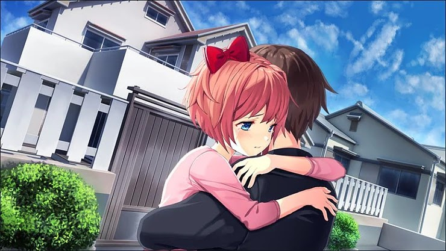

Another Moment With You
Another Moment With You é uma experiência episodica Muito interessante. Cada episódio o forçará a viajar através dos demônios internos que atormentam as quatro garotas, permitindo que você veja as coisas de suas perspectivas e se coloque em seu lugar. Focando puramente no design da história abrangente, Another Moment With You é uma experiência comovente e emocional que o deixará fisgado desde o início. Episódio 1: Sayori Episódio 2: Yuri Episódio 3: Natsuki Episódio 4: Monika ((Em desenvolvimento))
⬇ Download